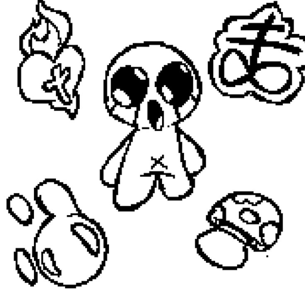

App desktop pra uma clínica odontológica de Águas Claras: bot no WhatsApp e painel com conversas, agenda, documentos cifrados e orçamentos. Atualiza sozinho a cada versão que sai do CI.

Loteamento em Palmital de Minas (MG). Mapa 3D com os 83 lotes feito em cima da planta do cartório, e formulário que leva o interessado pro WhatsApp do corretor.

Enemy Drop Loot (v2.27) e QoL Kit (v0.6), os dois públicos na Workshop. Tem limite anti-farm pedido por jogador, consertos de mods antigos da comunidade e vídeo do youtuber Back To The Basement.
O conectoma real da mosca-das-frutas jogando Friday Night Funkin' sozinho, com o cérebro renderizado ao vivo por cima do jogo. Acerta 26/26 no chart de teste, e no jogo de verdade ainda estou calibrando.
Estagiário de QA de nov/2024 a abr/2026. Mais de 80 casos de teste, automação E2E com Cypress, API com Postman e BDD em Gherkin.
Roda todo dia às 23h23: busca vaga de QA em Greenhouse, Lever, LinkedIn e outras fontes, filtra por local e gera um relatório. Em formulário Greenhouse ele preenche sozinho, até dropdown React Select. A maioria das vagas pede login, então o envio automático quase nunca fecha, e o bot virou mais um radar de vaga.
Minha marca de sites. Tenho um template com segurança, acessibilidade e SEO prontos, e sites-demo por segmento (barbearia, pet shop, oficina, contabilidade) pra mostrar pro comércio de Brasília.